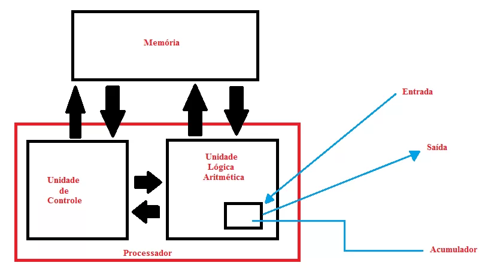

Alan Turing é um dos pilares da computação moderna. Ele criou a Máquina de Turing, um modelo teórico que fundamenta os conceitos da computação. Turing também foi fundamental para a quebra de códigos durante a guerra e ajudou a estabelecer os princípios da computação digital. A Máquina de Turing serviu como uma base teórica para o desenvolvimento de algoritmos e computação digital. Turing fez grandes contribuições para a ciência da computação, ajudando a entender os limites do que pode ser computado por máquinas.
Os computadores eram gigantescos e de certa forma desorganizados pela falta de padrão, até que o matemático John von Neumann, criou uma arquitetura para ser seguida “Arquitetura Von Neumann”: Processador (CPU): Responsável por processar as instruções e realizar cálculos. Ela é dividida em duas partes: a Unidade de Controle (CU), que controla a execução das instruções, e a Unidade Lógica e Aritmética (ALU), que executa operações matemáticas e lógicas. Memória: Armazena dados e instruções. A memória é dividida em duas partes: memória de programa (onde o software é armazenado) e memória de dados (onde os dados temporários são guardados). Dispositivos de Entrada: Permitem que o usuário insira dados no computador, como teclados e mouses. Dispositivos de Saída: Exibem os resultados processados, como monitores e impressoras. Barramento: Conjunto de canais que conecta todos os componentes e permite a comunicação entre a CPU, memória e dispositivos de entrada/saída. Nisso, o computador foi separado entre Hardware (parte física do computador) e Software (programação/ comunicação com a máquina).
